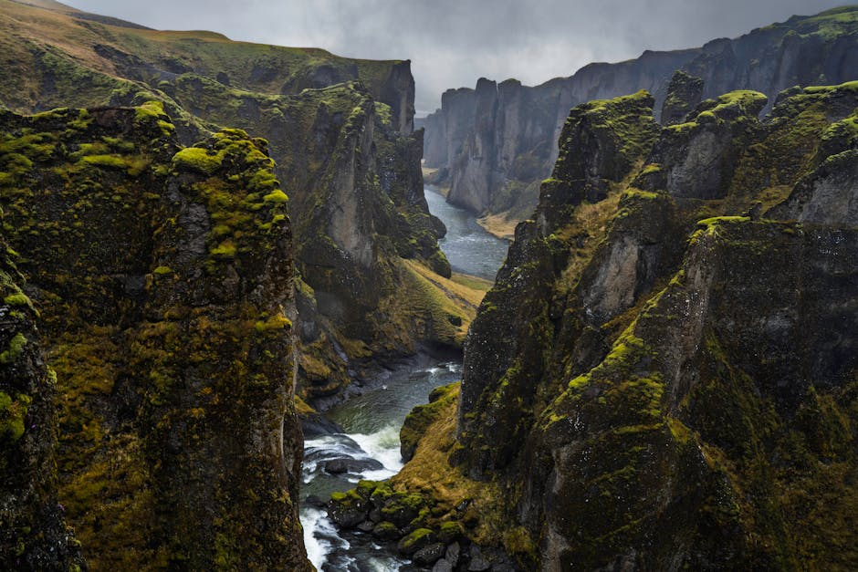
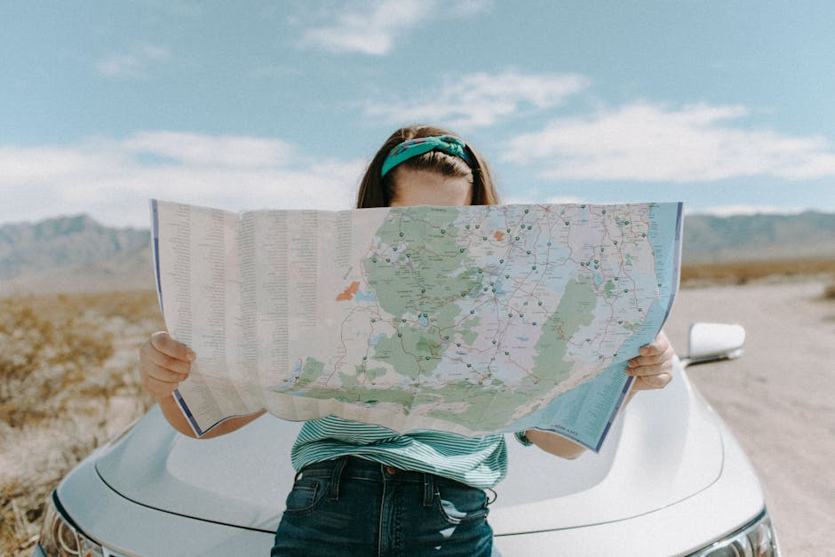
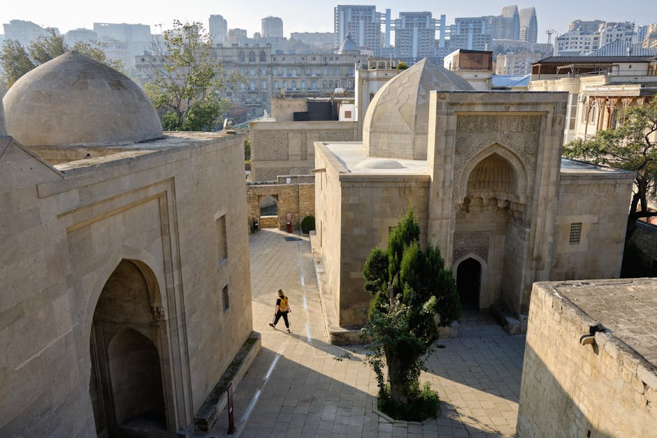
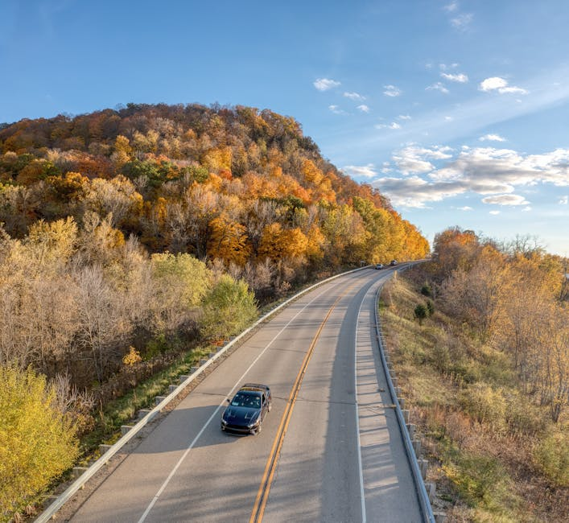
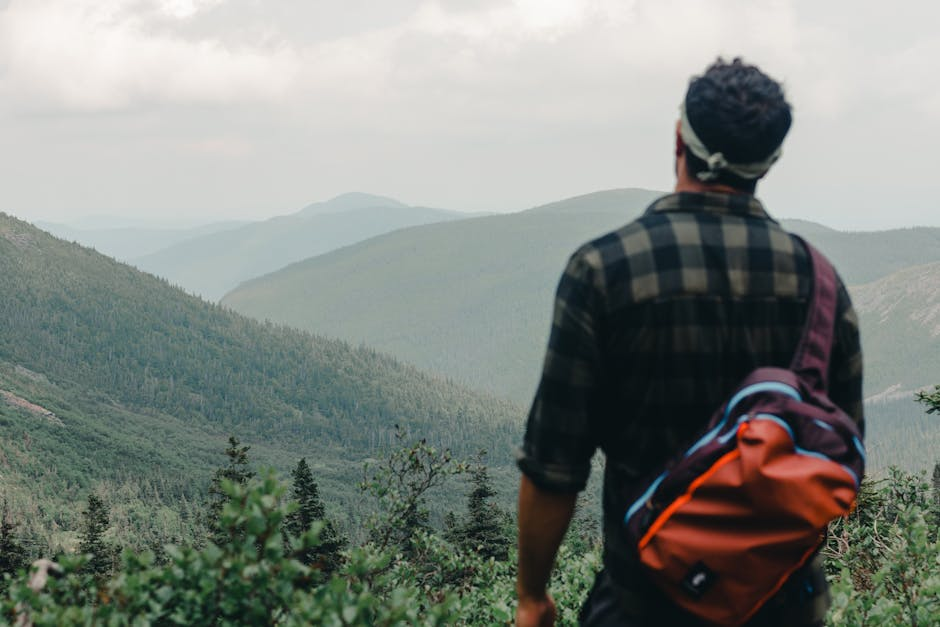

Racconti, itinerari e visioni per il viaggiatore moderno.
Unproper Studio seleziona le migliori esperienze e le ispirazioni più autentiche tratte dall'universo di Lonely Planet Italia.
Inizia a esplorareLa nostra filosofia di viaggio
Crediamo che ogni viaggio inizi molto prima della partenza: inizia con una storia, un'immagine, un'idea. Unproper Studio è la tua rivista di viaggi e itinerari dedicata a chi non si accontenta delle solite rotte, ma cerca una connessione più profonda con i luoghi.
Esploriamo le più affascinanti destinazioni turistiche globali e diamo voce alla bellezza autentica del nostro territorio. Che tu stia pianificando le tue prossime vacanze Italia o sognando mete lontane, selezioniamo per te contenuti autorevoli, curati per trasformare la curiosità in un'esperienza reale e memorabile.
Attraverso gli occhi degli esperti, ti guidiamo alla scoperta di paesaggi incontaminati, culture millenarie e narrazioni che arricchiscono l'anima.


I racconti di chi viaggia con noi
"Gli itinerari viaggio proposti sulle pagine di Unproper Studio mi hanno fatto scoprire angoli di Toscana che non conoscevo affatto. Una fonte di ispirazione editoriale inesauribile per chi ama viaggiare con lentezza."
— Marco R., 2026
"Articoli scritti con una profondità rara. Grazie alle loro guide editoriali abbiamo organizzato un tour culturale perfetto tra le principali città d'arte italiane, vivendo l'esperienza in modo autentico."
— Elena S., 2026
"La migliore bussola editoriale per orientarsi tra mille destinazioni turistiche. Consigli pratici, recensioni oneste e racconti emozionanti che preparano al viaggio."
— Davide L., 2026
Le nostre rubriche e ispirazioni

Scoperta dei Borghi Italiani
Esplora le gemme nascoste della penisola attraverso i nostri reportage. Ti portiamo lontano dal turismo di massa, svelando l'autenticità delle tradizioni locali, le botteghe storiche e i panorami segreti dei più affascinanti borghi italiani.

Itinerari Viaggio Curati
Mettiamo a disposizione percorsi dettagliati e testati dagli esperti. I nostri itinerari viaggio sono pensati per ottimizzare il tuo tempo, combinando tappe imperdibili a deviazioni sorprendenti, fornendoti una bussola narrativa prima ancora di partire.

Guide alle Città d'Arte
Approfondimenti storici, culturali e gastronomici per vivere appieno le capitali mondiali della cultura. Le nostre rassegne sulle città d'arte ti offrono chiavi di lettura inedite per ammirare monumenti celebri e quartieri emergenti con occhi nuovi.
Ispirazione Vacanze Italia
Dalle vette alpine alle coste bagnate dal mare cristallino del Sud, raccogliamo idee fresche e aggiornate per le tue fughe nel Bel Paese. Trova lo spunto perfetto per le tue prossime vacanze Italia, che tu cerchi relax, avventura o enogastronomia.
Domande Frequenti
Come scegliete le destinazioni turistiche di cui parlate?
Selezioniamo le mete basandoci sull'autorevolezza delle fonti originali e sull'esperienza di viaggiatori esperti. Cerchiamo un equilibrio perfetto tra i grandi classici imperdibili e i luoghi meno battuti, per offrire sempre spunti originali sulle migliori destinazioni turistiche.
Posso trovare consigli specifici per le mie vacanze Italia?
Assolutamente sì. Dedichiamo ampio spazio al nostro Paese, valorizzando la ricchezza del territorio. Troverai guide approfondite sia per le grandi metropoli che per i piccoli borghi italiani, ricchi di fascino, storia e tradizioni culinarie uniche.
Gli itinerari viaggio proposti sono adatti a tutti?
Proponiamo percorsi molto diversificati per rispondere alle esigenze di ogni viaggiatore. Dalle rilassanti passeggiate culturali nelle città d'arte ai percorsi on the road più avventurosi o ai trekking nella natura, indicando sempre lo stile di viaggio e il livello di impegno richiesto.
Vendete direttamente pacchetti viaggio o prenotazioni alberghiere?
No, Unproper Studio è una rivista di viaggi e itinerari a scopo editoriale e promozionale. Forniamo l'ispirazione, le informazioni culturali e i consigli pratici, ma non fungiamo da agenzia di viaggio. Le eventuali prenotazioni di servizi avvengono sempre tramite i fornitori originali e i partner menzionati.
Con quale frequenza aggiornate i contenuti editoriali?
Il nostro team editoriale seleziona e pubblica regolarmente nuovi articoli, reportage fotografici e guide. Questo ci permette di garantirti informazioni sempre fresche, in linea con le stagionalità e attente alle nuove tendenze del mondo del viaggio.
Resta in contatto
Hai suggerimenti per nuove mete, vuoi segnalarci un borgo nascosto o semplicemente desideri maggiori informazioni sulla nostra linea editoriale? Compila il modulo e la nostra redazione ti risponderà al più presto.
Redazione (Sede di Riferimento EDT)
Via Mazzini 23
10123 Torino, Italia